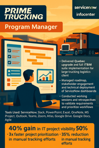
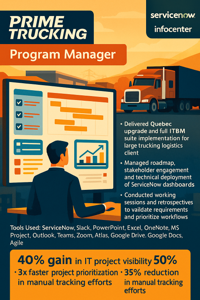

Troy Essick
Cloud SaaS & ERP Leadership Portfolio | Clearwater, FL
PMP | Oracle Cloud | Infor CloudSuite | ServiceNow

Cloud SaaS & ERP Leadership Portfolio | Clearwater, FL
PMP | Oracle Cloud | Infor CloudSuite | ServiceNow
I’m Troy Essick, a Customer Success Manager and Program Leader with over 17 years of experience helping organizations deliver results through cloud transformation, SaaS solutions, and ERP project delivery.
My background spans a range of roles across healthcare, logistics, education, and enterprise tech. I specialize in guiding customers through successful adoption of Cloud ERP (Oracle, Infor CloudSuite) and ServiceNow platforms — always with a focus on delivering measurable value, improving retention, and strengthening strategic relationships.
I’m currently focused on integrating AI-enhanced SaaS workflows into cloud environments to drive proactive insights, automation, and intelligent engagement at scale.


 
